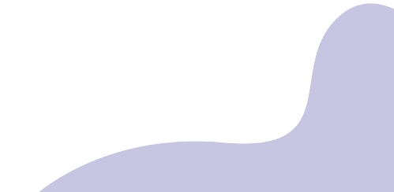
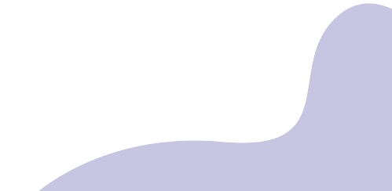

.png)
GUARDIÕES DA GALÁXIA VOL.3: O aventureiro do espaço Peter Quill torna-se presa de caçadores de recompensas depois que rouba a esfera de um vilão traiçoeiro, Ronan. Para escapar do perigo, ele faz uma aliança com um grupo de quatro extraterrestres. Quando Quill descobre que a esfera roubada possui um poder capaz de mudar os rumos do universo, ele e seu grupo deverão proteger o objeto para salvar o futuro da galáxia.

ELEMENTOS: Em uma cidade onde os habitantes de fogo, água, terra e ar convivem, uma jovem mulher flamejante e um rapaz que vive seguindo o fluxo descobrem algo surpreendente, porém elementar: o quanto eles têm em comum.

THE FLASH: Os mundos colidem quando Flash viaja no tempo para mudar os eventos do passado. No entanto, quando sua tentativa de salvar sua família altera o futuro, ele fica preso em uma realidade na qual o General Zod voltou, ameaçando a aniquilação.

VELOZES E FURIOSOS X: Dom Toretto e sua família precisam lidar com o adversário mais letal que já enfrentaram. Alimentada pela vingança, uma ameaça terrível emerge das sombras do passado para destruir o mundo de Dom e todos que ele ama.
 
Voltar

Voltar